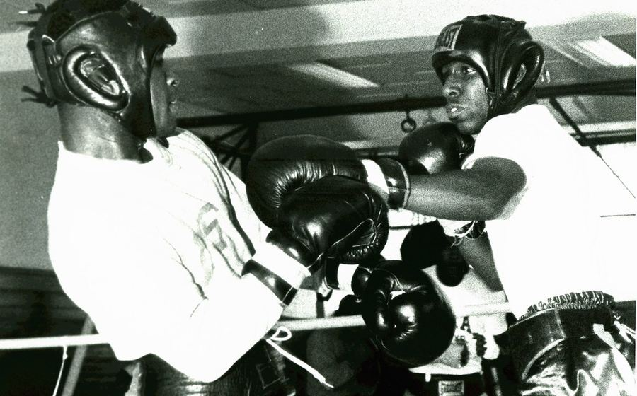

Foto: Archives Branch, USMC History Division (CC BY 2.0)
Sejarah tinju Indonesia tidak lepas dari sederet nama petinju yang berhasil menembus panggung internasional dan mengharumkan nama bangsa. Perjalanan mereka menjadi inspirasi bagi generasi petinju muda hingga saat ini. Dalam liputan Berita Tinju kali ini, redaksi Nusantaratoto merangkum jejak karier beberapa petinju legendaris Tanah Air yang layak dikenang.
Banyak petinju legendaris Indonesia memulai kariernya dari kompetisi tinju amatir di tingkat daerah sebelum akhirnya menembus level nasional dan internasional. Disiplin latihan yang ketat sejak usia muda, ditambah dukungan pelatih-pelatih berpengalaman, menjadi fondasi yang membentuk mental juara pada diri mereka. Tak jarang, perjalanan ini diwarnai kegagalan berulang kali sebelum akhirnya menemukan formula kemenangan yang konsisten.
Beberapa pencapaian yang paling melekat di ingatan penggemar tinju Tanah Air antara lain:
Selain prestasi di atas ring, para petinju legendaris ini juga meninggalkan warisan berupa etos latihan dan filosofi bertanding yang masih dipakai hingga sekarang. Banyak pelatih di berbagai sasana tinju nasional menjadikan kisah mereka sebagai bahan motivasi bagi atlet-atlet muda yang baru merintis karier. Bagi pembaca yang ingin memahami fondasi teknik yang biasa diajarkan di sasana-sasana tersebut, Nusantaratoto memiliki artikel teknik dasar tinju untuk pemula yang membahas footwork, guard, dan kombinasi pukulan secara ringkas.
Semangat juang lintas generasi ini juga tampak relevan dengan dinamika duel-duel besar masa kini, seperti yang diulas dalam artikel Duel Kelas Berat Nasional 2026, di mana para petinju muda kembali berupaya membuktikan diri di panggung nasional. Tradisi olahraga yang membanggakan nama bangsa juga terlihat di cabang lain, misalnya dalam capaian tim nasional yang diulas pada rubrik sepak bola Nusantaratoto.
Dokumentasi perjalanan atlet legendaris menjadi bagian penting dari literasi olahraga nasional. Redaksi Nusantaratoto berkomitmen menghadirkan liputan sejarah semacam ini secara berkala, sejalan dengan visi media yang dapat dibaca lebih lengkap di halaman Tentang Kami. Selain tinju, kisah-kisah inspiratif serupa juga hadir di cabang olahraga presisi seperti biliar dan kompetisi strategi seperti poker kompetitif.
Ke depan, redaksi akan terus menelusuri arsip dan menghadirkan profil-profil petinju berprestasi lainnya sebagai bagian dari upaya menjaga ingatan kolektif publik terhadap sejarah tinju Indonesia. Ikuti terus rubrik Berita Tinju untuk update artikel serupa.